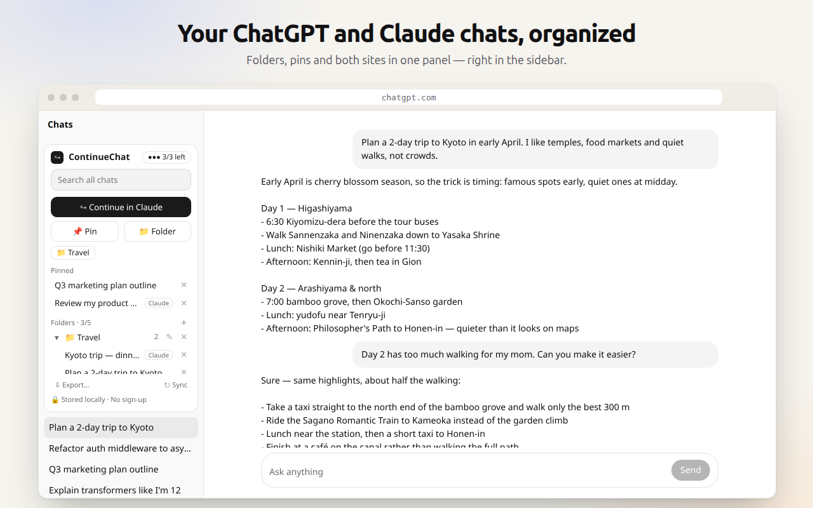
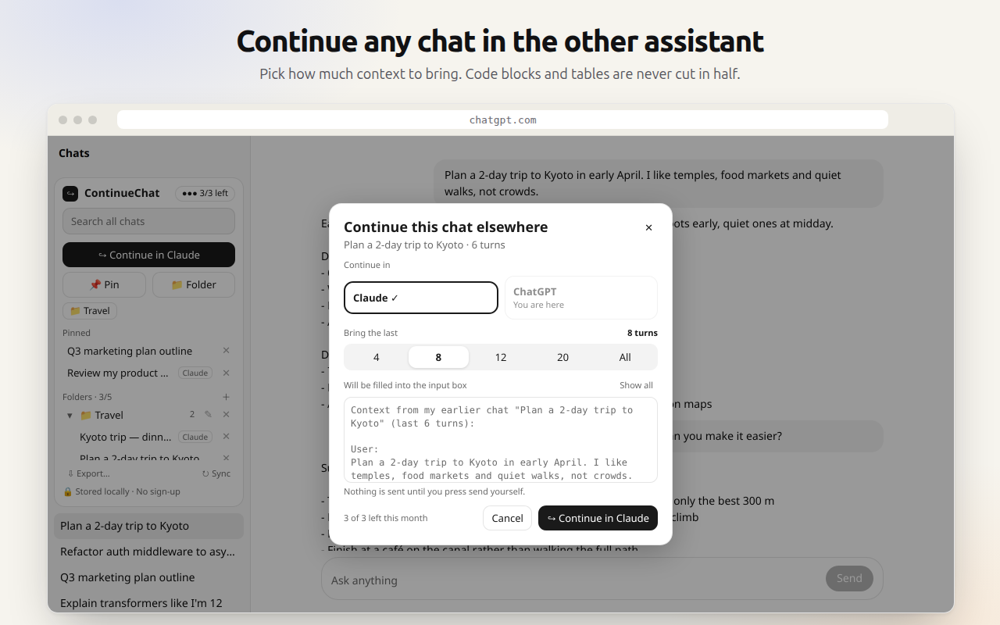
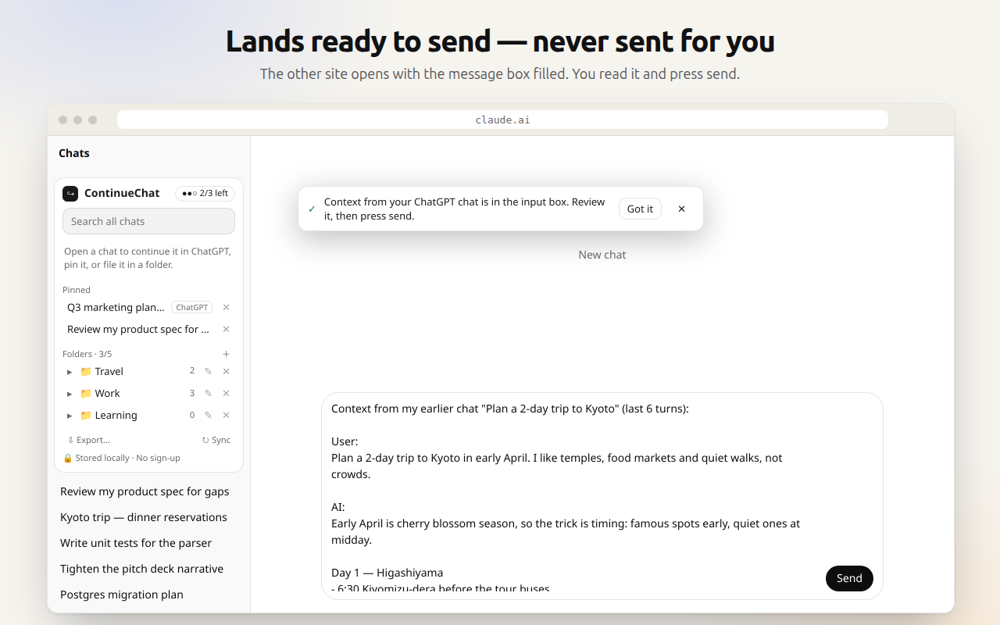
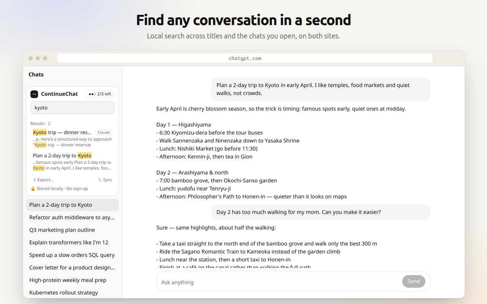
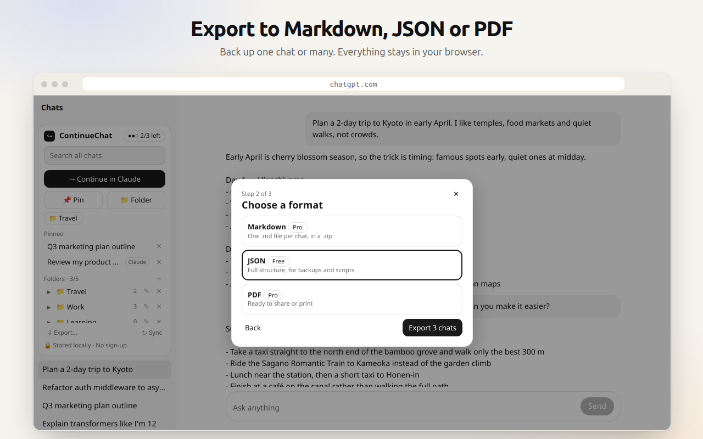
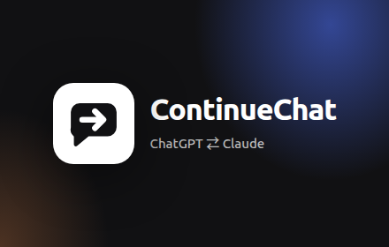
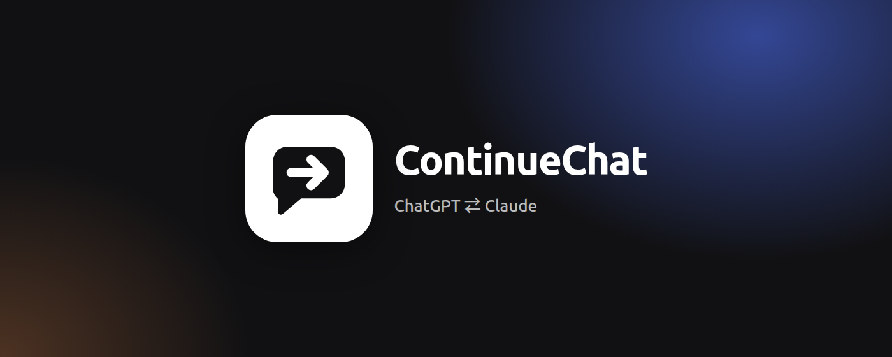

ContinueChat 上架 Chrome 应用商店清单
在 开发者后台 按顺序填写。灰色框里是要粘贴的英文内容，点"复制"即可。所有图片都在本页所在的文件夹 store-assets/cws/。
1上传安装包
开发者后台 → 「New item / 新建项」→ 选择 zip
安装包
/home/linzy/projects/apps/continuechat/release/continuechat-v0.2.2.zip
上传后浏览器地址栏里会出现扩展 ID（32 个小写字母），请把它发给我：许可代理会只允许这个 ID 访问。
2商店信息（Store listing）
左侧菜单「Store listing / 商品详情」。名称和简短说明会自动从安装包读取，无需填写。
Description（详细说明）
ContinueChat adds a small panel to ChatGPT and Claude that keeps your conversations organized — and lets you continue any chat in the other assistant with one click.
CONTINUE A CHAT IN THE OTHER ASSISTANT
• Click "Continue in Claude" (or "Continue in ChatGPT") on any conversation.
• Choose how much to bring: the last 4, 8, 12 or 20 turns, or everything. Context is trimmed to fit without ever cutting a code block or table in half.
• The other site opens in a new tab with the message box already filled in. You review it and press send — ContinueChat never sends anything for you.
• If the box can't be filled, you get a one-click "Copy context" button instead.
ORGANIZE
• Folders and pins that work across both sites.
• Instant local search over titles and the full text of chats you've opened — including Chinese and Japanese words in the middle of sentences.
• Export any chat to Markdown, JSON or a printable PDF. Back up everything to one file and import it again.
• English and Simplified Chinese interface.
PRIVATE BY DESIGN
• Your conversations, folders and search index are stored only in your browser.
• No account, no sign-up, no analytics, no tracking, no ads.
• The only request ContinueChat sends to our server is a Pro license check — never chat content.
FREE AND PRO
• Free: 3 continues per month, up to 5 folders, pins, search, single-chat export and JSON backup.
• Pro ($4.99/month or $39 once): unlimited continues, unlimited folders, bulk Markdown and PDF export. Upgrade any time from Settings → License. Payments are handled by Creem, our merchant of record.
Website: https://continuechat.coylin.com
Support: support@coylin.com
Privacy policy: https://continuechat.coylin.com/privacy
ContinueChat is an independent product and is not affiliated with, endorsed by or sponsored by OpenAI or Anthropic. ChatGPT is a trademark of OpenAI. Claude is a trademark of Anthropic.
Category（类别）
选 Productivity → Workflow & Planning（如果没有这一项，选 Productivity → Tools）
Language（语言）
选 English
Store icon（商店图标 128×128）
上传
release/unpacked/icons/128.pngScreenshots（截图，按顺序上传 5 张）





Small promo tile（小宣传图 440×280，必填）

Marquee promo tile（大横幅 1400×560，选填）

Homepage URL（主页）
https://continuechat.coylin.com
Support URL（支持页面）
https://continuechat.coylin.com/#faq
"Official URL" 需要先在 Google Search Console 验证域名，可以留空。
Mature content（成人内容）
选 No
3隐私（Privacy）
左侧菜单「Privacy / 隐私权」
Single purpose description（单一用途）
ContinueChat helps people manage their own AI conversations on chatgpt.com and claude.ai: it organizes those chats (folders, pins, search, export) and lets the user continue a chat from one of these sites on the other by pre-filling the message box. It never sends messages on the user's behalf.
storage 的用途
Stores the user's settings, folders, pins, monthly usage counter and license status locally in chrome.storage. Nothing in it is sent to us.
unlimitedStorage 的用途
Conversations and the search index are kept locally in IndexedDB so users can search, organize and export them offline. People with hundreds of long chats exceed the default quota. The data never leaves the browser.
alarms 的用途
Re-checks a purchased Pro license about every 3 days, so a cancelled or refunded license stops unlocking Pro features. No other background work is scheduled.
Host permission（主机权限）的用途
chatgpt.com and claude.ai: content scripts read the user's own conversation list and the chats they open, using the session the user is already signed in with, so the extension can organize, search and export them; when the user chooses to continue a chat, they fill the message box on the other site (never sending it). The extension runs on no other sites.
continuechat-license-proxy.costacruz896.workers.dev: our license server. Only when the user enters a Pro license key, the extension sends that key and an activation ID to activate and periodically validate it. No conversation content is sent.
Remote code（远程代码）
选 No, I am not using remote code（所有代码都打包在安装包里）
Data usage（数据使用）勾选这三项
Authentication information：用网站已有的登录会话读取对话列表（只在内存中使用），以及用户输入的 Pro 许可证密钥。
Personal communications：用户和 AI 的对话内容（只保存在浏览器本地）。
Website content：读取对话标题和网页上的文字，只保存在用户浏览器本地。
其余类别都不勾。下面三条声明（不出售数据、不用于无关用途、不用于信用评估）全部勾选。
Personal communications：用户和 AI 的对话内容（只保存在浏览器本地）。
Website content：读取对话标题和网页上的文字，只保存在用户浏览器本地。
其余类别都不勾。下面三条声明（不出售数据、不用于无关用途、不用于信用评估）全部勾选。
Privacy policy URL（隐私政策链接）
https://continuechat.coylin.com/privacy
4给审核员的测试说明
左侧菜单「Access → Test instructions」：Username / Password 留空，下面这段粘贴到 Additional instructions（限 500 字符）
Test instructions
No account with us is needed. Sign in to chatgpt.com or claude.ai with any free account. The ContinueChat panel appears at the top of the left sidebar (floating if the sidebar is collapsed). Open a chat and click "Continue in Claude" or "Continue in ChatGPT": the other site opens in a new tab with the message box filled in; nothing is sent automatically. Folders, pins, search and export need no sign-up. Pro needs a license key and is optional for review.
5发布设置（Distribution）
Visibility（可见性）：Public
Regions（地区）：All regions
价格：Free（如果有 "contains in-app purchases / 含应用内购买" 选项就勾上，因为 Pro 是付费的）
Regions（地区）：All regions
价格：Free（如果有 "contains in-app purchases / 含应用内购买" 选项就勾上，因为 Pro 是付费的）
6提交审核
右上角点 Submit for review。可以勾选"审核通过后自动发布"，也可以通过后手动发布。审核一般几天。
审核通过后告诉我，我会把网站上的 zip 下载换成"添加到 Chrome"按钮，并让许可代理只接受商店版插件的请求。